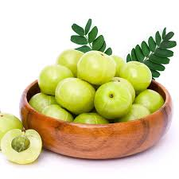
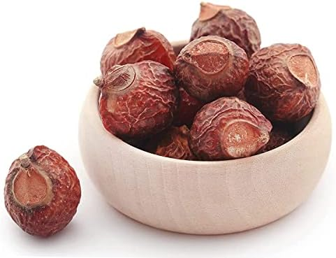
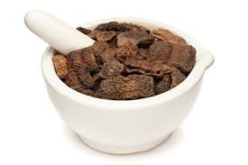
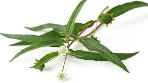
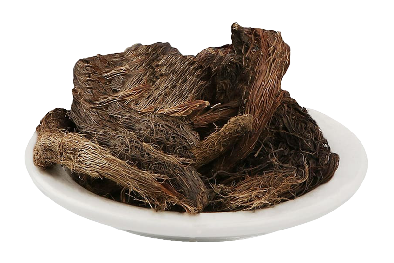

Executive Summary:
1.Henna leaves

Henna is a natural hair colouring agent and conditioner. Women in India use this natural compound to strengthen, nourish and beautify their tresses. Henna is one of the best hair beauty ingredients that India has shared with the rest of the world. The most commonly known benefits of henna for hair are that it strengthens, nourishes and brightens the hair.Bottom of Form.
2.Amla
Amla, also known as Indian gooseberry, has been used since ancient times to deal with hair troubles. It contains essential vitamins and antioxidants that don't just improve the health of damaged hair but also work towards preventing hair problems. Amla can take care of hair fall, slow hair growth, and dandruff to dryness and split-ends.
3.Reetha
Sapindusmukorossi or Soap Nut or Reetha is an Ayurvedic medicinal herb. Grown in tropical regions of India, China and Japan, soap nut is a small spherical nut which contains saponin, a chemical compound with cleaning properties that has the tendency to produce foam with water. It is a great natural product for many of our cleaning needs.
4.Shikakai
Shikakai, also known as Shika in Tamil, Seekaaya in Telugu, and Soap pod in English, is a powerful ayurvedic plant that has been used for generations as a cleanser for long hair and dandruff management and relief in skin diseases.
Shikakai, also known as Acacia concinna in scientific terms, is a shrub-like tree native to Central India. It is typically found in the Indian subcontinent's tropical woods. The climbing shrub has oblong-shaped dark brown pods, bipinnate leaves, and pink flowers.
5.coffee
Here's how you can make your own chemical-free hair dye at home. Most hair colours contain chemicals that can damage your hair, making it look lifeless, dull and damaged. The cons that come with regular hair colouring are far too many to list here, but we couldn't stop ourselves from sharing them with you!
6.Black Tea
Black tea is rich in plant polyphenols, which are naturally occurring compounds that can act as antioxidants. Since black tea doesn't contain a developer, it cannot penetrate the hair shaft and permanently change its color. Any darkening effects you get from using black tea to color your hair will only be temporary.
If you're a blonde, don't expect to have black hair after using tea to dye hair. Black tea also will not drastically change the color of your hair. You can achieve a more dramatic effect by leaving the tea on your hair for a longer period of time, or by repeatedly dyeing hair with tea.
7.Hibiscus
We can use hibiscus and amla masks to strengthen our hair follicles and maintaining scalp health. For this mask, mix hihbiscus powder and Amla powder in equal amounts in water to make a smooth paste. Keep it for about 30 minutes and rinse it off with a mild shampoo.
8.Bhringraj
Bhringaraj oil is an ayurvedic hair tonic that is extremely beneficial for hair fall, grey hair and dandruff. Apart from benefitting the hair, it is also useful for skin problems, headaches, and mental weakness. Massaging your hair with this oil provides a calming effect on the head, increases memory and improves blood circulation on the scalp.
Bhringaraj oil is one of the amazing hair oils that can prevent hair fall and effectively promote hair growth. Siddha Yoga Sangraha, an ayurvedic organization was founded by Swami Muktananda which aims in benefitting the hair and overall health. This article brings you some of the best formulations in Ayurveda that can bolster immunity and also hair growth as mentioned in their works.
9. Jatamansi
Nardostachys jatamansi is an important drug of Ayurveda and is used in different traditional systems of medicine such as Ayurveda, Unani, Siddha, etc. Its rhizomes and roots are used as a tranquilizer, laxative, cardiac tonic, for curing vertigo, nervous headache, low and high blood pressure, etc.. The rhizomes as well as roots of the plant are medicinally rich and therefore, have been the focus of chemical studies